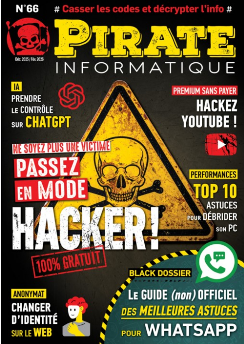

Veille Technologique
Thème principal : Cybersécurité & actualités. Cette page regroupe ma veille (résumés courts, impact pour le BTS SIO et liens source).
Surveillance hebdomadaire de sources spécialisées, lecture, sélection, puis synthèse orientée “compétences BTS SIO”.
Sources suivies
Pirate Informatique (magazine)
Magazine spécialisé — tutoriels, décryptages sécurité, actualités cyber.
Chaine de Micode / Underscore
Documentaire et interview sur le monde cyber
Articles sélectionnés

Pirate informatique : comprendre les techniques des cyberattaquants
Source : Pirate Informatique (via Cafeyn) —
Présentation des méthodes utilisées par les pirates informatiques : attaques, outils, failles exploitées et stratégies de compromission des systèmes.
- Identifier les menaces et vulnérabilités d’un SI (E5 — Gérer le patrimoine informatique).
- Adapter les mesures de sécurité et de prévention (E6).
- Améliorer la sensibilisation à la cybersécurité en entreprise.
Cybersécurité & IA : comprendre les nouvelles menaces
Source : YouTube —
Vidéo de vulgarisation expliquant comment l’intelligence artificielle est utilisée à la fois pour attaquer et défendre les systèmes informatiques.
- Comprendre les nouvelles menaces liées à l’IA (E5 — Gérer le patrimoine informatique).
- Adapter les outils de supervision et de détection (E5).
- Améliorer la réponse aux incidents de sécurité (E6).

Veille cybersécurité – Threat Intelligence
Source : Feedly Threat Intelligence —
Plateforme de veille centralisant les actualités cybersécurité : vulnérabilités (CVE), ransomwares, menaces émergentes et attaques en cours.
- Veille technologique et sécuritaire (E6).
- Anticipation des menaces et bonnes pratiques de sécurité.
- Appui à l’analyse de risques et à la protection du SI.